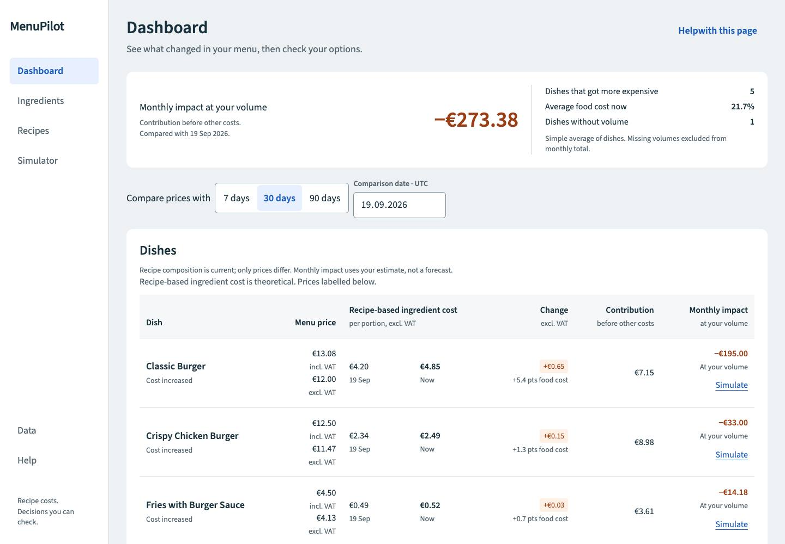
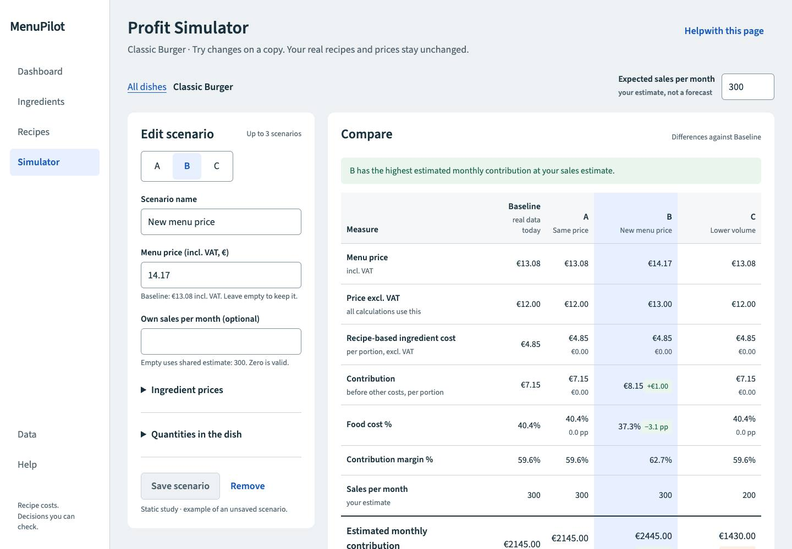
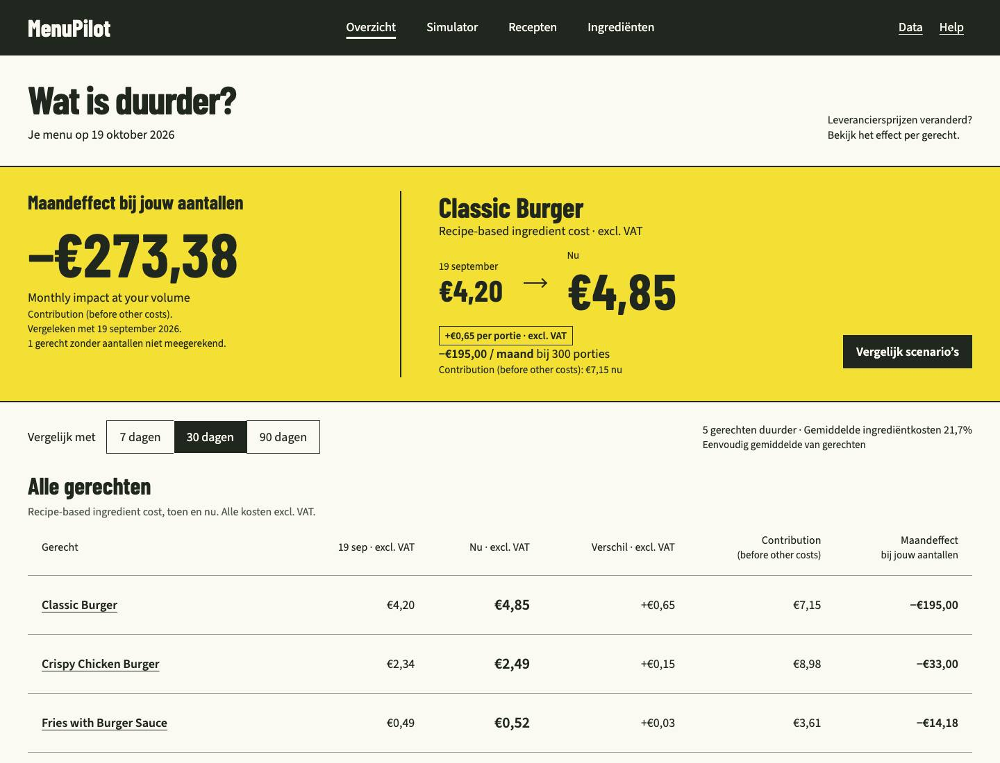
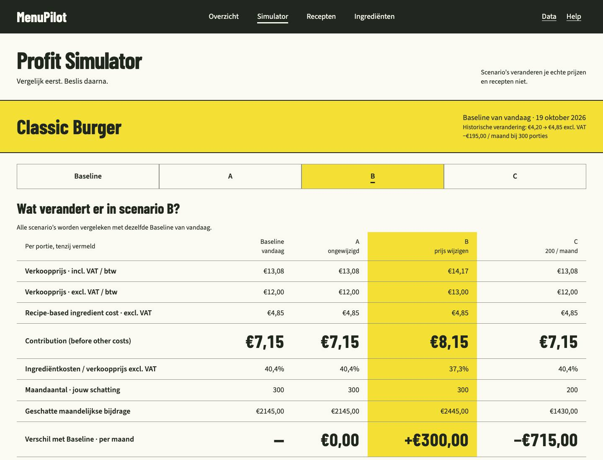
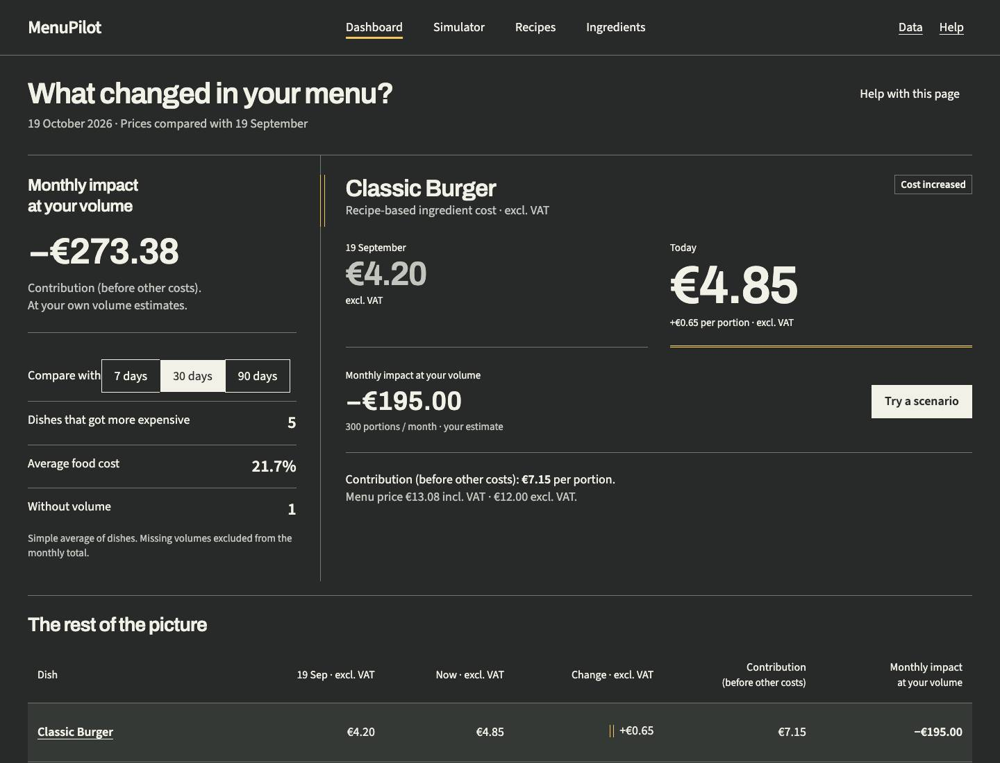
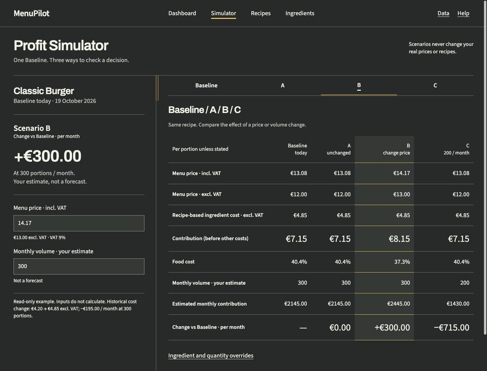

MenuPilot: три направления
Одна задача и одни числа, три визуальных характера. Нажмите на изображение, чтобы открыть его целиком. HTML адаптируется под ширину окна; 375 px показаны отдельными снимками.
Пользователи — владельцы и управляющие любого возраста. Ясность и доступность остаются обязательными во всех вариантах.
Выбрано владельцем: C+ — «Кухонная линия». Полноценная светлая и тёмная темы, спокойные крупные цифры и редактирование рядом со сравнением. B отклонён как слишком кричащий; A остаётся запасным. Ниже сохранены исходные предложения.
AСначала разница
Спокойная синяя панель с привычной боковой навигацией. Хорошо объясняет изменение цены и сохраняется как запасной вариант.
Сильная сторона: Быстро освоить; сдержанная иерархия.
Риск: Визуально близко к обычным бизнес-панелям.
Dashboard

Simulator

Мобильные экраны · 375 px
A из коммита 99e1e39: исходные JPEG сохранены. В HTML исправлен только пробел Help with this page.
BЦенник
Крупные цены и единое жёлтое поле делают изменение заметным. Список блюд остаётся строгим, а выбранный сценарий легко сверяется с исходным.
Сильная сторона: Самый узнаваемый вариант; хороший выбор для дневной работы.
Риск: Жёлтый может напоминать рекламу скидок; нужно проверить восприятие.
Dashboard

Simulator

Мобильные экраны · 375 px
Новые снимки Chrome: 1440×1100 и 375×1100. Нидерландские подписи — проверка длины, финансовые термины сохранены.
CКухонная линия
Тёмная рабочая поверхность с одной линией сравнения. Форма и положение отметки показывают выбранное значение, а цифры остаются неподвижными.
Сильная сторона: Собранный характер; минимум цветового шума.
Риск: Блики и яркое солнце; светлая версия потребует отдельной работы.
Dashboard

Simulator

Мобильные экраны · 375 px
Новые снимки Chrome: 1440×1100 и 375×1100. Английские подписи.
Что проверить: найдите €4.20 → €4.85, −€195.00 в месяц и итог −€273.38; в B запятая вместо точки. Затем сравните Baseline и B в Simulator. Все примеры вымышленные и статические: поля не считают, данные не сохраняются; A/B/C внутри Simulator — сценарии, буквы направлений этой страницы обозначают дизайн.
Компоненты и лицензии · Описание B · Описание C · Проверки и ограничения